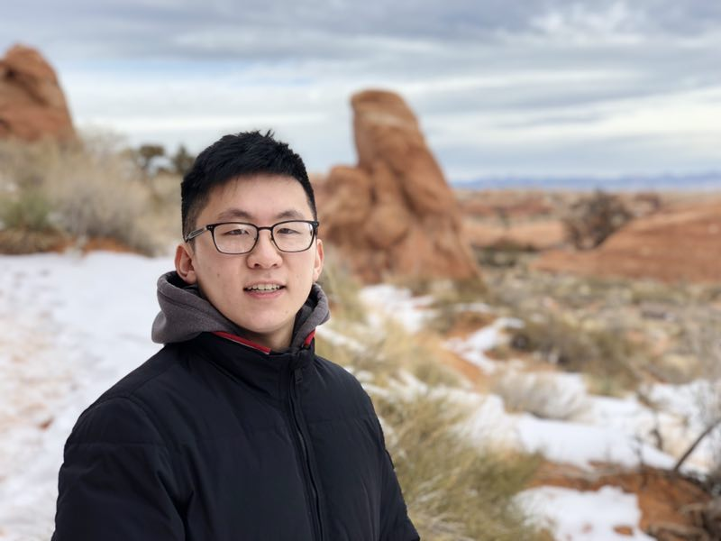

Incoming Assistant Professor, Georgia Tech ISyE (Fall 2027)
ORISE Postdoctoral Fellow, NETL · Visiting Postdoctoral Fellow, Stanford WE3 Lab
I’m Anthony Cheng, an ORISE Postdoctoral Fellow with the National Energy Technology Laboratory (NETL) working with Dr. Alison Fritz and Dr. Sangbum Lee, with a visiting appointment at the WE3 Lab at Stanford University with Dr. Meagan Mauter. In Fall 2027, I will join the faculty of the H. Milton Stewart School of Industrial and Systems Engineering at the Georgia Institute of Technology as an Anderson-Interface Early Career Assistant Professor.
I am recruiting students to start in Fall 2027 who want to work at the intersection of critical materials, supply chains, and energy systems, and who are comfortable moving between quantitative modeling and the realities of how materials are produced, traded, and regulated. If that sounds like you, I would be glad to hear from you.
My research advances the understanding of supply chains, critical materials production, and manufacturing systems that underpin energy security, energy transitions, and decarbonization. Decisions about technology, sourcing, and policy shape how these materials and technologies are produced and traded, and those production and trade pathways in turn determine outcomes like supply-chain security, cost competitiveness, and emissions. My aim is to represent these pathways explicitly and at decision-relevant resolutions, so the trade-offs across those outcomes can be clearly evaluated.
My current work focuses on unconventional sources and processing routes for security-relevant critical minerals, building on previous research on vulnerabilities, incentives, and interventions in battery electric vehicle material supply chains. Future work aims to both deepen and expand these research trajectories, through endogenizing technology constraints and dynamics, firm manufacturing and sourcing choices, and how those interact with systems-level policy. This includes understanding strategic material and machine dependencies of energy technologies writ large, supply-chain decision-makers that current models overlook, and policies at different levels of geographic and institutional scales.
I received my PhD from Carnegie Mellon University in Engineering and Public Policy, where I was an NSF Graduate Research Fellow advised by Dr. Erica Fuchs, Dr. Valerie Karplus, and Dr. Jeremy Michalek. I graduated from MIT in 2020 in Materials Science and Engineering, with minors in Computer Science and Energy Studies.
I serve as Vice President of the Macro-Energy Systems Society, after serving as a fellow for the 2024-2025 year. I was also fortunate to participate as a 2024-2025 fellow in Resources for the Future's Critical Minerals Research Lab, in addition to having researched decarbonization in the industrial sector as an MIT Eloranta Fellow.
I care a lot about helping others, both on a "micro" community level and a "macro" global world problems level. I'm proud of my work in Carnegie Mellon's Graduate Student Assembly as the Vice President of Campus Affairs, advocating for graduate students in all non-academic and non-social settings (e.g. transportation, healthcare, parents and families, sustainability, dining, public art, etc.). In my undergraduate studies, I appreciated having the opportunity to lead StartLabs (MIT's undergrad entrepreneurship club) and MacGregor House (my living community).
In the past, I've been selected as one of the nation's top high school STEM students, presented at International Science Fairs, represented the United States at the National Geographic World Championships, performed as a piano soloist with the Utah Symphony and at locations like Carnegie Hall, and been recognized with a number of awards. I also enjoy reading, creative media, blogging about the NBA, beatboxing and a cappella (having won awards for Best Vocal Percussion and Best Arrangement at the "real-life" version of Pitch Perfect), making Discord bots, and other elements of the arts.